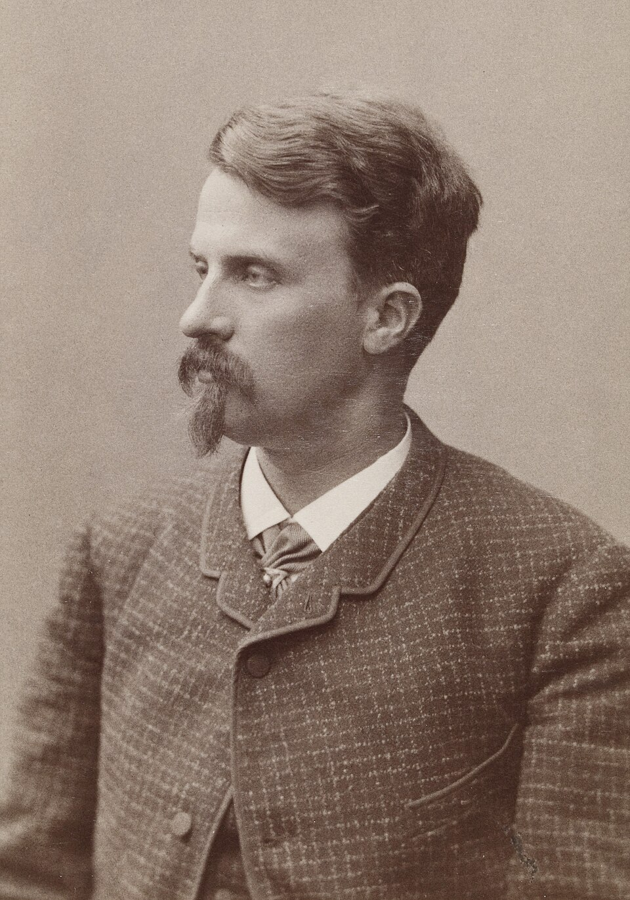

Juhani Aho
Pieni havainto avaa kokonaisen mielenmaiseman.
Ahon proosa kulkee arkisesta huumorista kaipaukseen ja mustasukkaisuuteen, aina läheltä ihmisen kokemusta.
Etsi teokset kirjastostaElämä ja teokset
Juhani Aho syntyi Lapinlahdella nimellä Johannes Brofeldt. Hän työskenteli kirjailijana ja lehtimiehenä ja oli mukana perustamassa Päivälehteä. Rautatie ilmestyi vuonna 1884.
Romaanien rinnalla Aho kehitti lyhyitä kertomuksia ja tunnelmakuvia, joita hän kutsui lastuiksi. Hänen tuotantonsa ulottuu Rautatien maaseutuhuumorista Yksin-teoksen sisäiseen puheeseen ja Juhan traagisiin ihmissuhteisiin.
Tyyli ja teemat
Ahon kertoja lähestyy henkilöä usein tämän oman havaintotavan kautta. Vieras asia voi saada koomisen mittakaavan tai yksityinen pettymys täyttää koko maiseman. Luonto ei ole vain tausta: valo, äänet ja liike osallistuvat tunnelman rakentumiseen.
Arki · Kaipaus · Luonto
Aloita tästä
Rautatie
Matin ja Liisan odotukset uudesta kulkuneuvosta kasvavat ennen ensimmäistä junamatkaa. Lämmin ja tarkka kuvaus muutoksen kohtaamisesta.
Yksin
Pariisiin sijoittuva pienoisromaani kulkee kaipauksen ja pettymyksen mukana. Kertojan mieliala muuttaa ympäristön sävyjä.
Lastuja I–III
Lyhyet tekstit sopivat luettaviksi yksi kerrallaan. Tarkkaile, miten vähäisestä tapahtumasta syntyy kokonainen tunnelma.
Juha
Juhan, Marjan ja Shemeikan suhteita muovaavat halu, riippuvuus ja erilaiset odotukset. Tiivis romaani jättää paljon rivien väliin.
Vertaa Rautatien ja Yksin-teoksen ääntä: miten lähelle henkilön omaa ajattelua kertoja kummassakin asettuu?